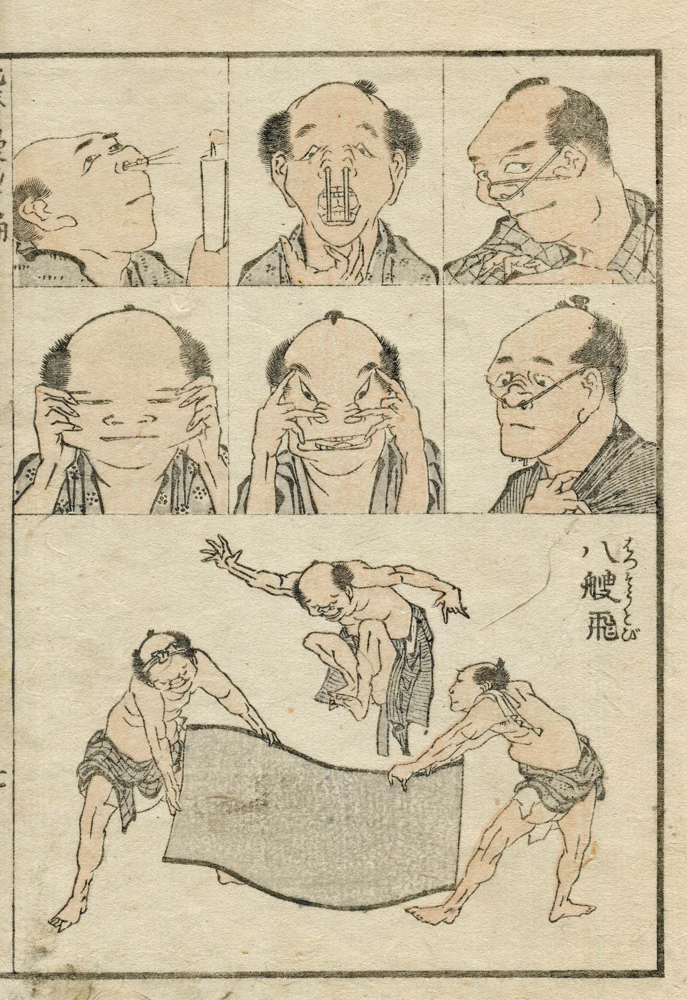
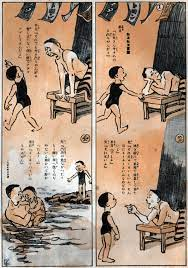

|  | El manga surgió en el año 1814, en la época que Hokusai Katsushika desarrolló sus series de croquis(dibujos simplificados a ojo) de escenas de la vida diaria, esta misma serie son “dibujos caprichosos” que se denominan mangas. |
|  | En el año 1902 el artista Kitazawa Rakuten publicó el primer manga moderno, que en cada página contiene cuatro viñetas con textos mecanografiados.Luego de unos años editores japoneses empezaron a sacar revistas mensuales(1920) que estaban destinadas principalmente a chicos(Shonen club), chicas(Shojo club) y para adultos jóvenes(Yonen club). Pero al llegar la segunda guerra mundial afectó a la evolución del manga. |